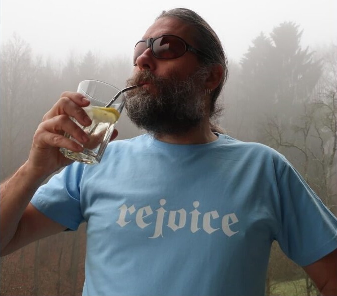
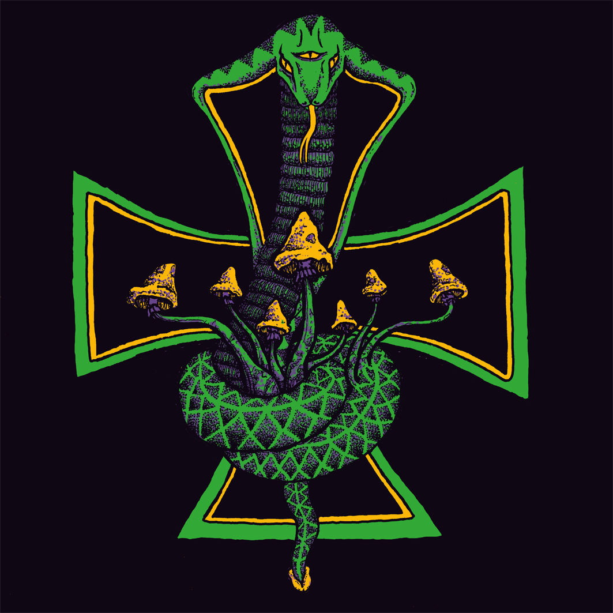
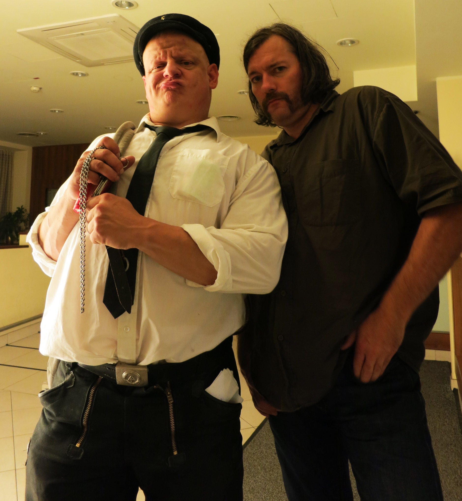
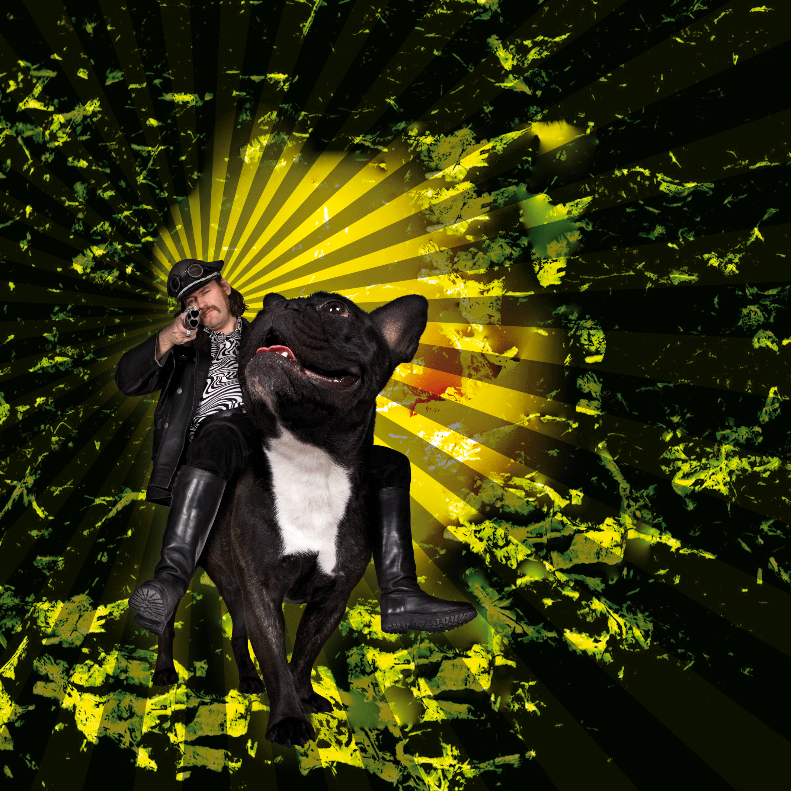
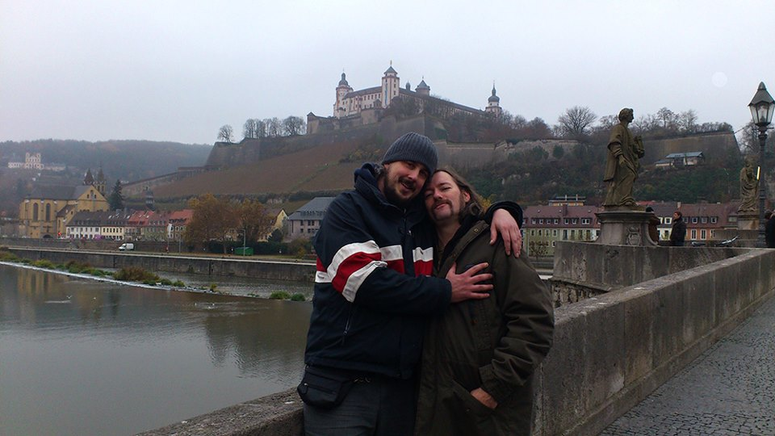
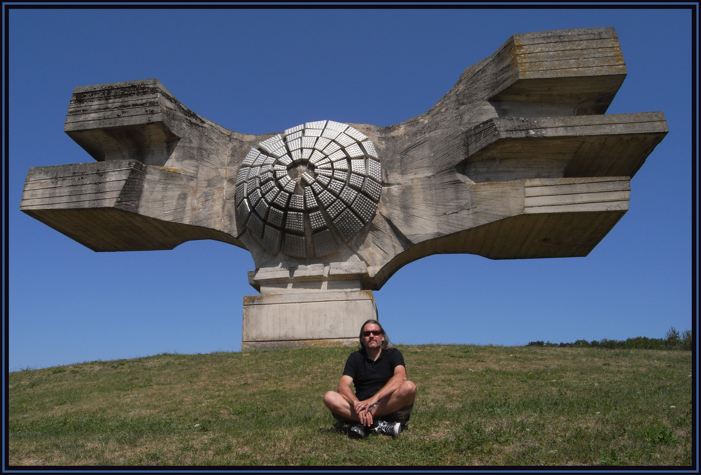

SECTION 00 MOTIFS
Austrian industrial music, documented routes
Archives & identity
Indexed as Albin Julius Martinek
in SR-Archiv (Austrian popular music)
with stable identifiers (ISNI, MusicBrainz).
The Moon lay hidden beneath a Cloud
Ensemble active 1992–1999 (MusicBrainz).
Der Blutharsch began in 1996 as a parallel project
(Side-Line; release-level credits to be expanded).
Der Blutharsch
Austrian group 1996–2022 (MusicBrainz).
Documented locality: Vienna for the group entity.
Primary outlet: WKN (Austria).
Labels & autonomy
WKN — catalogue hub on MusicBrainz.
HauRuck! cited in specialist press (Side-Line);
operational detail only when separately sourced.
SECTION 01 WORK & TIME
Left column: dated statements tied to the rows. Right column: stable database URIs (also collected in SOURCES_ARCHIV.md).
Documentary resources (selected)
These rows are navigation anchors, not a complete discography. Every claim in the timeline column should be checked against the linked databases before academic reuse.
-
—MusicBrainz — person “Albin Julius”Life dates, ISNI, country metadata, and stable URI musicbrainz.org/artist/bef61ba9-111a-4dc0-8a06-6564a5df5fca.
-
—MusicBrainz — “Der Blutharsch”Group span 1996–2022; Vienna on the group record; aliases including the extended English name. musicbrainz.org/artist/6207d896-8568-49ec-9545-905a5f7b0c2f.
-
2003Time Is Thee Enemy! (release group)MusicBrainz release group bb96b15a-da57-33b6-b807-981abdfa48e5 — first-release-date 2003. Do not cite this year alone for narrative chronology until the parallel 2004 release-group record is reconciled (see
QUESTIONS_ARCHIV.md). -
—SR-Archiv — Albin Julius MartinekAustrian popular-music archive index with linked bands and print references. sra.at/person/37976.
-
—Encyclopaedia Metallum — Albin JuliusLegal name and participation tables (community-edited). metal-archives.com/artists/Albin_Julius/350832.
-
2022Side-Line — obituarySpecialist press overview and industry testimony (cross-check sensitive anecdotes). side-line.com/albin-sunlight-julius-passed-away-rip/.
-
—AllMusic — artist capsuleShort English bio line and catalogue pointers. allmusic.com/artist/albin-julius-mn0002463251.
-
—Discogs — artist hubCommunity discography; open individual releases before asserting credits. discogs.com/artist/236345-Albin-Julius.
Within work & time
Discography indexes
Official catalogue pages on Discogs and MusicBrainz. This site does not mirror cover art or track lists; open each host to review releases and verify credits before reuse.
-
Der Blutharsch
Discogs artist hub; MusicBrainz group entity (aliases include the extended English name used from 2010 onward).
-
The Moon lay hidden beneath a Cloud
Discogs artist hub; MusicBrainz group span 1992–1999 — per-release credits still need a dedicated pass.
-
WKN (label)
Discogs label entry; MusicBrainz label anchor used elsewhere on this site.
-
Albin Julius (person credits)
Discogs artist hub for cross-project appearances; pair with the MusicBrainz person URI for life dates and ISNI.
Source synthesis
Rows above are navigation aids. For publication-grade work, open each URI, note retrieval dates, and keep a running log in SOURCES_ARCHIV.md.
- MusicBrainz — person and group JSON also retrievable via the documented API (see methodology).
- SR-Archiv — institutional index for Austrian popular music (person 37976).
- Side-Line — useful for industry chronology; corroborate sensitive claims.
- Wikimedia Commons — performance photograph (SneQ, CC BY-SA 4.0) used on this homepage under that licence.
SECTION 02 MOVING IMAGE
Rights-cleared material only
Local MP4 mirrors from the legacy Webflow export were not carried over. When a moving-image file is embedded, it will be listed with rights in SOURCES_ARCHIV.md and on the methodology page.
Embeds will be added once each file’s chain of rights is documented.
SECTION 03 GALLERY
Rights-tracked images — full sheet on the Gallery page






SECTION 04 PHASES & PRESENTATION
Documented turning points (no biographical fiction)
The following cards summarise milestones that already appear in MusicBrainz, Metal Archives, or Side-Line. They replace the former “exile” section of the template.
1996 — project launch
Der Blutharsch is dated from 1996 in MusicBrainz. Side-Line notes a first self-titled picture-disc year; edition size is pending verification (see QUESTIONS_ARCHIV.md).
2003 — documented pivot
MusicBrainz lists the release group Time Is Thee Enemy! with first-release-date 2003. A parallel release-group year (2004) still needs reconciliation (QUESTIONS_ARCHIV.md). Side-Line describes a move toward a band-centred, rock-oriented presentation; wording here stays neutral.
2010–2022 — line-up & naming
Metal Archives lists keyboards 2010–2022 under the extended project name also indexed in MusicBrainz as an alias of Der Blutharsch.
2022 — death
MusicBrainz life-span end 2022-05-04. Side-Line reports the morning of 4 May 2022; treat time-of-day as press detail, not a civil-registry extract.
SECTION 05 INTERVIEWS
Published conversations — read in full at the source
Recorded interviews with Albin Julius are scarce and most live on independent webzines whose URLs drift over time. The list below tracks the interviews this archive considers most useful: a primary URL where the original is still online, a Wayback snapshot when the original is at risk, language, year, and a short note on the topics covered. Quotations are not transcribed here — follow the link to read the publishing party's text in full.
-
I
Occidental Congress (webzine)
"Der Blutharsch — interview"
Webzine archive page (HTTP). Snapshot also available on the Internet Archive.
-
II
Seidr webzine
"Interview with Albin Julius (Der Blutharsch)"
Russian webzine; English version of the interview. Old HTTP host — page still resolves; mirror via Wayback recommended.
-
III
Chain D.L.K.
"Der Blutharsch" interview
Italian-based industrial / experimental webzine; still online in 2026.
-
IV
mica — music austria (Music Information Center Austria)
"Albin Julius im Interview" — by Clemens Marschall
Institutional outlet (national music information centre). The interview accompanies the editorial "Uniformierte Vieldeutigkeit" on the use of Hitler iconography in music.
-
V
Santa Sangre Magazine
"2014 through my eyes — Albin Julius (Der Blutharsch and the Infinite Church of the Leading Hand)"
First-person retrospective format; useful as primary text for the project's 2010s phase.
-
VI
Garsas / Sound (radikaliai.lt) — Mindaugas Peleckis
"Exclusive interview with Albin Julius (Part 1): 'Most people I think see music just as a lifestyle tool … for me it's kind of a religion.'"
Original URL was 404 in May 2026. The link below points to a 2024 Wayback Machine snapshot.
Editorial note — several of these interviews include statements about military aesthetics, sampling of historical figures, and personal politics. They are listed as primary sources to be read critically, not as endorsements.